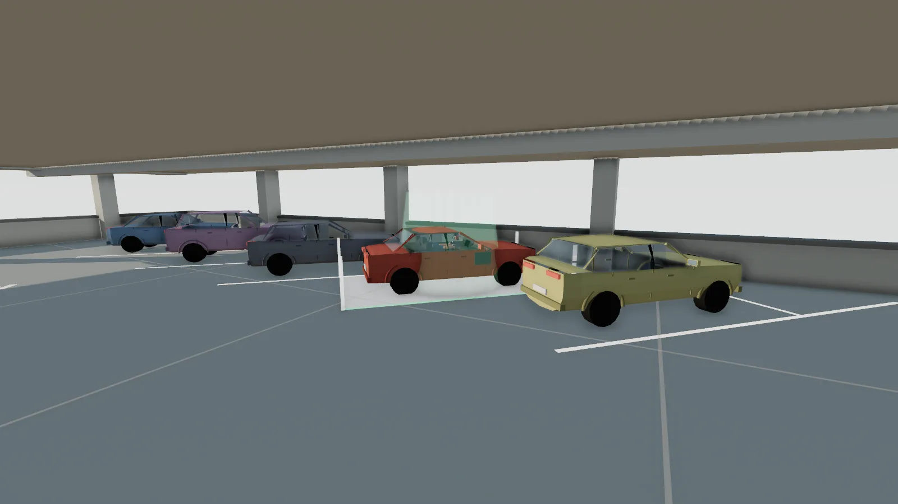

2.6 m

The roof
The last lots are up top, where the bays are narrowest.
8° heading tolerance · 2 minutes

Roof One · the lane is too narrow to U-turn
I was supposed to be studying for a physics test.
Inclines. Friction. The forces on a car parked on a ramp.
I got bored and went looking for a parking game to play for five minutes.
None of them felt right.
So I closed the textbook and made my own.
Twelve car parks
2.6 m
The last lots are up top, where the bays are narrowest.
8° heading tolerance · 2 minutes
2.75 m

A van on one side, a concrete pilaster on the other.
0.45 m to the pilaster
3.0 m

Sun through the pillars, and bays set at a 45° angle.
1.22 m door gap · echelon row
Your bay is waiting